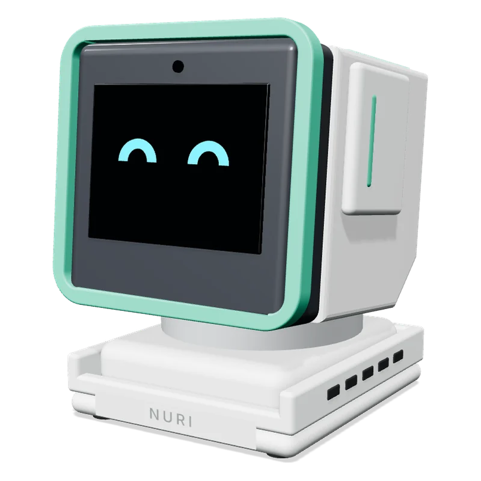
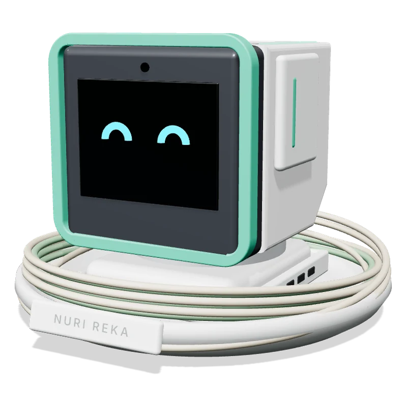
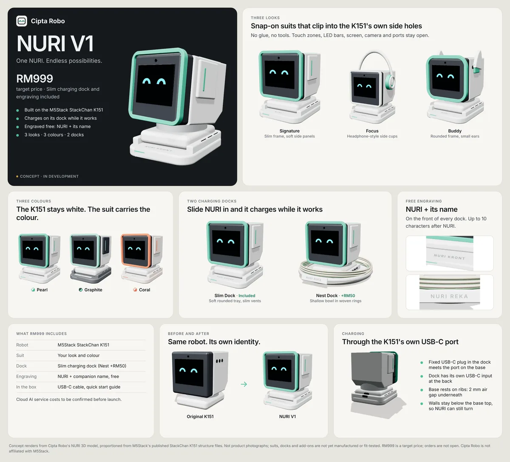
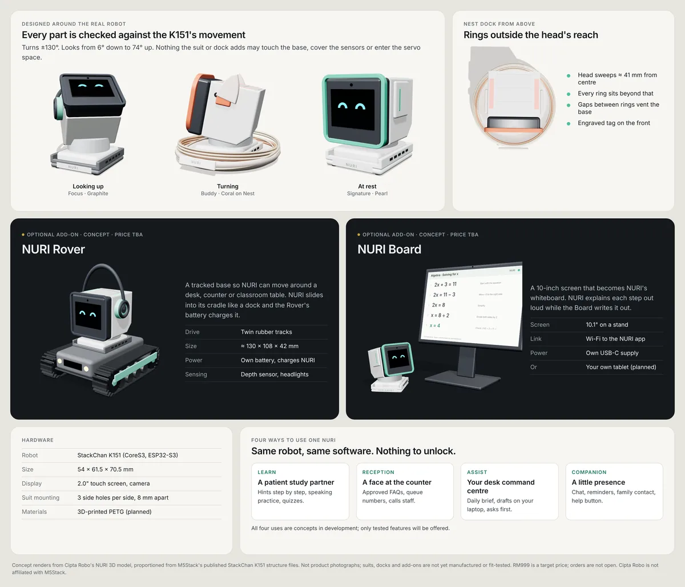

A patient study partner
Show me where I went wrong.
- Step-by-step hints, not just answers
- Speaking practice in Bahasa Melayu, English, Mandarin, Japanese
- Quizzes and study timers
A small AI companion for your desk, designed to help you learn, greet your customers, keep your day on track and check in on the people you care about. Built on the M5Stack StackChan K151, dressed in a suit you choose, with its name engraved on its dock.

Real, proven hardwareThe original M5Stack StackChan K151, with a camera, microphones, touch and two-axis movement.
Charges while it worksSlide it onto its dock. The dock's USB-C plug feeds the K151's own charging port.
Named by youEvery dock is engraved with NURI and your companion's name. Free.
These are not four models or four plans. Every NURI shares the same hardware and software, so you can use it for all of them in the same day. Nothing to unlock.
Show me where I went wrong.
Welcome! Check our services or take a number?
What matters most today?
Good morning. Shall we call your daughter?
And the list goes on. Homework helper, shop greeter, study timer, bedtime storyteller, desk buddy. NURI's purpose is limited only by your creativity.
Each use is developed in stages and marked Concept until it has been built and tested. Only tested features will be offered.
Short concept animations made with the same 3D model as this site. They show how NURI is designed to help; the features themselves are still in development.
Give NURI a name, a voice and a way of talking that feels right. Then connect it to your favourite AI, such as ChatGPT or Claude, so the conversations you already enjoy now have a face on your desk. The more you talk, the better it knows you.
Concept · planned featuresChatGPT is a product of OpenAI and Claude is a product of Anthropic. NURI is not affiliated with either. Connecting an AI service may need your own account and is subject to that provider's terms and pricing.
A short list on purpose. Every part is designed to clip onto the K151's existing mounting holes, leave the sensors, ports and vents open, and clear the robot's full range of movement. All of it is checked in our 3D model; physical fit testing is next.

Slim face frame and soft side panels. The everyday NURI.

Headphone-style side cups with a high, open band. Made for study and work.

Rounded frame and small side ears. Friendly at home and at the counter.

A low tray that disappears on a desk. Slide NURI in and it charges while it works.

A shallow bowl wrapped in thin woven rings, like a small nest. The gaps between the rings let the base breathe.
Orders are not open yet. Cloud AI services may carry a separate cost; how that works will be confirmed before launch.

Two accessories in development. Neither is needed to use NURI. Prices will be announced once they have been prototyped.
Every suit part and dock is modelled on M5Stack's published K151 structure files, then checked against the robot's touch zones, display, ports, vents and full movement.
Measurements come from M5Stack's published K151 structure files. The tilt pivot is estimated until it is measured on a physical unit. Read the design rules.
Two summary sheets for sharing: the product and its options, then the practical design and the add-ons. Rendered from the same 3D model as this site.


Orders aren't open yet. Message us on WhatsApp to join the first batch list, ask a question or request a demo. No payment needed.
Not yet. NURI is in development. The first units will be a small batch after the suit and docks have been fit-tested on real K151 robots. RM999 is the target price. Message us on WhatsApp to join the first batch list.
They are four ways to use the same NURI, not four products. Every NURI gets the same features as they are released. You never pay to unlock a use.
Yes. The K151 charges through the USB-C port on its base. Both docks have a fixed USB-C plug that lines up with that port, so NURI can keep running on your desk while it charges.
They charge the same way. The Slim Dock is a low, rounded tray and comes with every NURI. The Nest Dock is a shallow bowl wrapped in woven rings, for RM50 more. Both carry the free NURI + name engraving.
It is designed not to. Suit parts mount on the K151's existing side holes and leave the top touch zones, LED light bars, screen, camera, side USB-C port and power button open. Every part is checked in our 3D model against the robot's full range of movement, and will be tested on real K151 robots before any sale.
NURI's voice and AI features use cloud services that cost money to run. Whether that is included, a small subscription or bring-your-own key will be decided and stated clearly before any sale.
Both are in mind, with extra care. Child use will need guardian controls and strict privacy. The Companion help button is a convenience, not a medical or emergency device.
No. Cipta Robo is an independent Malaysian studio. NURI is built on the M5Stack StackChan K151; reseller and branding terms are being confirmed with the supplier.